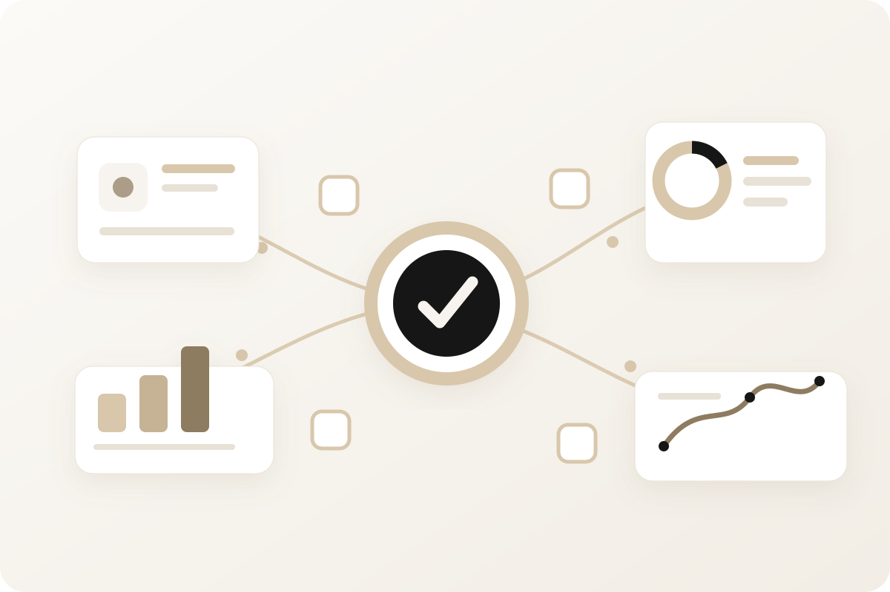

AI Adoption Sprint
Identify where AI belongs, select the strongest opportunity and leave with a clear action plan.
Best forLeadership teams that need focus before
committing time, budget or technology.
Choose the level of support that matches where the work stands. We identify the right opportunity, turn it into action, implement the solution, prove the result and transfer ownership to your team.

Start with one focused decision or engage ilene.ai across a broader transformation. Every engagement has a defined operating outcome, accountable ownership, measurable value and a practical handoff.
Identify where AI belongs, select the strongest opportunity and leave with a clear action plan.
Turn one high value opportunity into a working solution with the workflow, ownership and success measures designed together.
Improve and extend proven AI work across connected workflows, teams and systems.
Redesign the operating model so AI supports how the organization decides, executes, measures and improves.
Risk reduction runs across every stage. ilene.ai assesses risk and recommends controls, mitigation actions, governance, ownership, escalation paths and monitoring requirements. Ongoing risk, compliance and control ownership remains with the client.
Not every problem needs AI. We begin with the business outcome and use evidence to determine where AI can improve the work, what must change around it and what is worth implementing.
The objective is a solution your organization can operate after we leave, with clear ownership, practical controls and a visible line to business value.
Find the workflow, decision or customer outcome worth improving.
Compare value, feasibility, risk and expected return.
Design the workflow, ownership, controls and success measures.
Introduce the right solution with adoption built into the work.
Prove the result, improve the model and expand what works.
A focused engagement that replaces scattered ideas with one clear priority, a defensible business case and a practical route into action.

Activate moves a selected use case from intention into a working solution. The workflow, technology, adoption and operating ownership are designed as one system.

Advance strengthens early AI results and expands them across connected teams, processes and systems without losing ownership, control or measurable value.

Transform connects strategy, workflows, technology, governance and performance across the organization so AI becomes part of how the business operates.

We assess risk throughout the work and recommend the controls, mitigation actions, governance, ownership, escalation paths and monitoring requirements needed for responsible operation.
ilene.ai does not own the client risk function, execute ongoing controls or assume compliance accountability. Those responsibilities remain with the client and its designated security, legal and risk leaders.
Bring the operating question, the stalled initiative or the AI idea. We will help determine what is worth doing, what should wait and what it will take to create a measurable result.